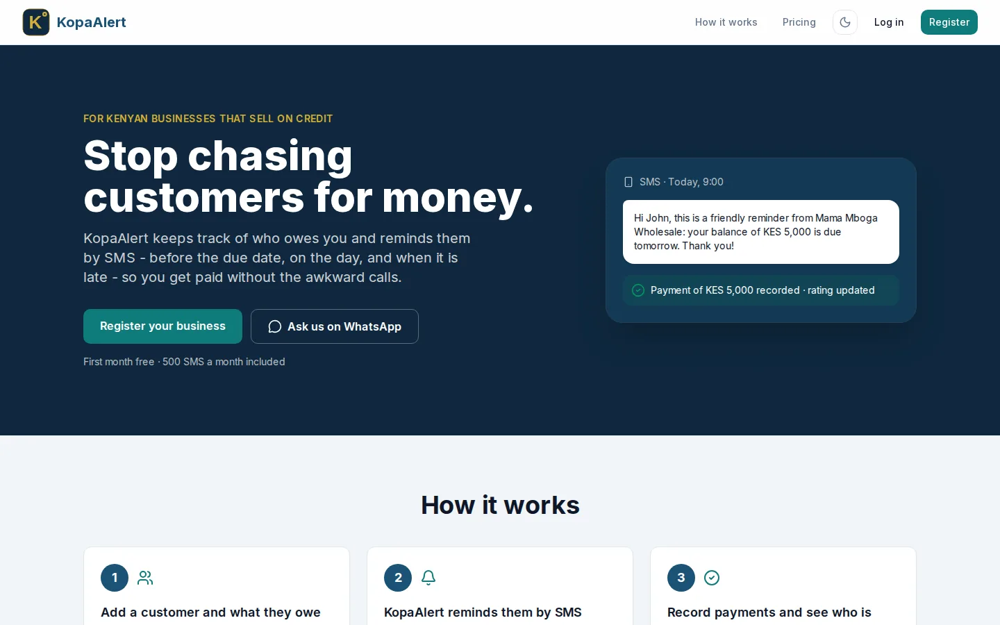
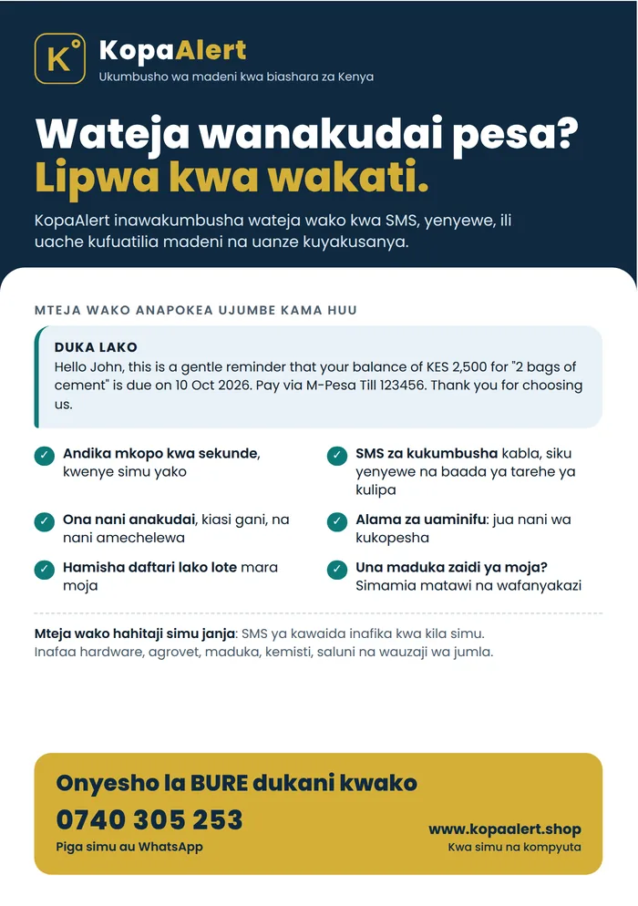

KopaAlert
kopa · to buy on creditKenyan shops sell on credit and track it in exercise books. Customers forget, or avoid paying. KopaAlert keeps the record and sends polite SMS reminders automatically, so owners get paid without the awkward calls.
What I built
- Automatic SMS reminders before, on and after the due date, as plain SMS that reach feature phones too (Africa's Talking)
- Loans, payments, top-ups and overpayment credit, with a full ledger and M-Pesa-style PDF statements
- Customer credit ratings and automatic blacklisting of long-overdue customers
- Import a whole notebook at once from Excel/CSV, or type it in
- Multi-branch businesses: each branch has its own customers, a branch switcher for owners, and staff who only see their branch
- Staff controls: deactivate/reactivate, opening hours per branch with a "today only" override, and an activity log of who changed what
- Subscription billing, SMS allowances, referrals ("bring a business, get a month free") and a super-admin console
- Installable app (PWA) with an offline page, for owners on budget phones
The hard part
Keeping every business's data private, and every employee inside their branch and their working hours, in the database itself, using PostgreSQL row-level security and triggers, so it holds even if someone bypasses the app, and even mid-session. Every change was rehearsed on a copy of the live schema before touching real businesses.
Stack
Next.js 16React 19TypeScriptSupabase · Postgres RLSPL/pgSQLAfrica's TalkingResendVercelJest

